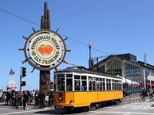
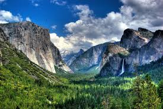
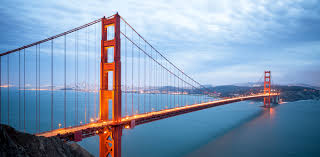
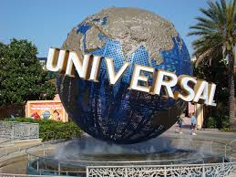
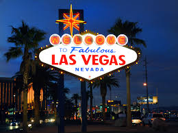
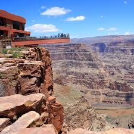
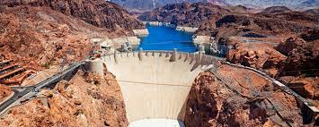

West Cost Family Vacation Trip
We visited California and Neveda States
California
California is very nice tourist place.They are alot of famous atractions are there. It is an old city,it is one of the big city in USA.We visited some places.
SFO Boat Tour
SFO was a busy city, lot of croud.we went in a boat trip it was very nice experence
The San Francisco Sailing Company was created to fill a need that exists in San Francisco. We are a fun and friendly, customer oriented sailboat charter service and sailing tour company. We pride ourselves on providing the most flexible and personal sailboat charters in San Francisco. We have captains ready everyday which means we can take you sailing today. With sailboats for 1 to 36 passengers we are perfect for any event. In the heart of San Francisco, we sail the finest yachts and offer the best rates.
Yosmeti National Park
Yosmeti national park was very beautiful natural mountains and water falls
Yosemite National Park (/joʊˈsɛmɪtɪ/, yoh-SEM-i-tee)[4] is an American national park lying in the western Sierra Nevada of Central California,[5][6] bounded on the southeast by Sierra National Forest and on the northwest by Stanislaus National Forest. The park, which is managed by the U.S. National Park Service, covers an area of 747,956 acres (1,168.681 sq mi; 302,687 ha; 3,026.87 km2)[2] and sits in four counties: centered in Tuolumne and Mariposa, extending north and east to Mono and south to Madera County. Designated a World Heritage Site in 1984, Yosemite is internationally recognized for its granite cliffs, waterfalls, clear streams, giant sequoia groves, lakes, mountains, meadows, glaciers, and biological diversity.[7] Almost 95% of the park is designated wilderness.[8] On average, about 4 million people visit Yosemite each year,[3] and most spend the majority of their time in the 5.9 square miles (15 km2) of Yosemite Valley.[7] The park set a visitation record in 2016, surpassing 5 million visitors for the first time in its history.[9] Yosemite was central to the development of the national park idea. First, Galen Clark and others lobbied to protect Yosemite Valley from development, ultimately leading to President Abraham Lincoln's signing the Yosemite Grant in 1864. Later, John Muir led a successful movement to establish a larger national park encompassing not just the valley, but surrounding mountains and forests as well—paving the way for the U.S. National Park system
Golden Gate Bridge
Golden Gate Bridge as "possibly the most beautiful, certainly the most photographed,bridge in the world."
The Golden Gate Bridge is a suspension bridge spanning the Golden Gate, the one-mile-wide (1.6 km) strait connecting San Francisco Bay and the Pacific Ocean. The structure links the American city of San Francisco, California – the northern tip of the San Francisco Peninsula – to Marin County, carrying both U.S. Route 101 and California State Route 1 across the strait. The bridge is one of the most internationally recognized symbols of San Francisco, California, and the United States. It has been declared one of the Wonders of the Modern World by the American Society of Civil Engineers.[7] The Frommer's travel guide describes the Golden Gate Bridge as "possibly the most beautiful, certainly the most photographed, bridge in the world."[8][9] At the time of its opening in 1937, it was both the longest and the tallest suspension bridge in the world, with a main span of 4,200 feet (1,280 m) and a total height of 746 feet (227 m).
From California we went to Los Aingles
Los Angeles
In Los Angeles we visited these places
Universol Studios
In Universol Studios we enjoyed a lot.we went on most of the rides.specailly I like the Studio Tour and Harry Portter Tour,my kids like the Minion ride.
Universal Studios Hollywood is a film studio and theme park in the San Fernando Valley area of Los Angeles County, California. About 70% of the studio lies within the unincorporated county island known as Universal City while the rest lies within the city limits of Los Angeles, California. It is one of the oldest and most famous Hollywood film studios still in use. Its official marketing headline is "The Entertainment Capital of LA".[1] It was initially created to offer tours of the real Universal Studios sets and is the first of many full-fledged Universal Studios Theme Parks located across the world. Outside the theme park, a new, all-digital facility near the Universal Pictures backlot was built in an effort to merge all of NBCUniversal's West Coast operations into one area. As a result, the current home for KNBC, KVEA and NBC News with Telemundo Los Angeles Bureaus with new digital facility is on the Universal lot formerly occupied by Technicolor SA. Universal City includes hotels Universal Hilton & Towers, the Sheraton Universal Hotel, and Universal CityWalk, which offers a collection of shops, restaurants, an 18-screen Universal Cinema and a seven-story IMAX theater. In 2017, the park hosted 9,056,000 guests, ranking it 15th in the world and 9th among North American parks.[3]
Observetory center
Observetory is very good for explore about planets.Their is Telescope,It is worlds largest Telescope,we saw Saturn planet through that.
The Griffith Observatory is a facility in Los Angeles, California, sitting on the south-facing slope of Mount Hollywood in Los Angeles' Griffith Park. It commands a view of the Los Angeles Basin, including Downtown Los Angeles to the southeast, Hollywood to the south, and the Pacific Ocean to the southwest. The observatory is a popular tourist attraction with an excellent view of the Hollywood Sign and an extensive array of space and science-related displays. Admission has been free since the observatory's opening in 1935, in accordance with the will of Griffith J. Griffith, the benefactor after whom the observatory is named.
HollyWood Sign
We did trecking for some time to see the HollyWood Signthen we took some pictures then came back.
Hollywood is a neighborhood in the central region of Los Angeles, California. This densely populated neighborhood is notable as the home of the U.S. film industry, including several of its historic studios, and its name has come to be a shorthand reference for the industry and the people associated with it.
Hollywood was a small community in 1870 and was incorporated as a municipality in 1903.[2][3] It was consolidated with the city of Los Angeles in 1910 and soon thereafter a prominent film industry emerged, eventually becoming the most recognizable film industry in the world.[4][5]
Santa Monica Beach
We went to Santa Monica Beach in LA, we enjoyed alot in beach,I like the waves and the sound of the waves.Kids played with the sand.
The beach is located along Pacific Coast Highway in Santa Monica. It is 3.5 miles long and has parks, picnic areas, playgrounds, restrooms, as well as manned lifeguard stations, the original Muscle Beach, bike rentals, concessions, a few hotels, a bike path, and wooden pathways for warm days and beachgoers with disabilities.[3] Visitor activities include volleyball, surfing, stand up paddleboarding, and swimming.[1] Smoking at the beach is prohibited.[4]
Neveda
Neveda is one the well know State in USA, it is a desert place, there are some water problems.
Neveda is famous natural park and casinos in las vegas.
Las Vegas
Las Vegas is full of diffrent Casinos.The night life is so good.I like Paris Casino,Disney Casino,Peramid Casino,and Newyork theam Casino.Las Vegas (/lɑːs ˈveɪɡəs/,[6] Spanish for "The Meadows"; Spanish: [las ˈβeɣas]), officially the City of Las Vegas and often known simply as Vegas, is the 28th-most populated city in the United States, the most populated city in the state of Nevada, and the county seat of Clark County. The city anchors the Las Vegas Valley metropolitan area and is the largest city within the greater Mojave Desert.[7] Las Vegas is an internationally renowned major resort city, known primarily for its gambling, shopping, fine dining, entertainment, and nightlife. The Las Vegas Valley as a whole serves as the leading financial, commercial, and cultural center for Nevada. The city bills itself as The Entertainment Capital of the World, and is famous for its mega casino–hotels and associated activities. It is a top three destination in the United States for business conventions and a global leader in the hospitality industry, claiming more AAA Five Diamond hotels than any other city in the world.[8][9][10] Today, Las Vegas annually ranks as one of the world's most visited tourist destinations.[11][12] The city's tolerance for numerous forms of adult entertainment earned it the title of Sin City, and has made Las Vegas a popular setting for literature, films, television programs, and music videos.
Grand Canyan
In Grand Canyan we went to SkyWalk. It is a glass bridge made by human on the 5000 feet top of the mountains. When we see through it we can see down river. All the mountains are in red color and layered.The Grand Canyon (Hopi: Ongtupqa;[2] Yavapai: Wi:kaʼi:la, Navajo: Tsékooh Hatsoh, Spanish: Gran Cañón) is a steep-sided canyon carved by the Colorado River in Arizona, United States. The Grand Canyon is 277 miles (446 km) long, up to 18 miles (29 km) wide and attains a depth of over a mile (6,093 feet or 1,857 meters).[3] The canyon and adjacent rim are contained within Grand Canyon National Park, the Kaibab National Forest, Grand Canyon-Parashant National Monument, the Hualapai Indian Reservation, the Havasupai Indian Reservation and the Navajo Nation. President Theodore Roosevelt was a major proponent of preservation of the Grand Canyon area, and visited it on numerous occasions to hunt and enjoy the scenery. Nearly two billion years of Earth's geological history have been exposed as the Colorado River and its tributaries cut their channels through layer after layer of rock while the Colorado Plateau was uplifted.[4] While some aspects about the history of incision of the canyon are debated by geologists,[5] several recent studies support the hypothesis that the Colorado River established its course through the area about 5 to 6 million years ago.[1][6][7] Since that time, the Colorado River has driven the down-cutting of the tributaries and retreat of the cliffs, simultaneously deepening and widening the canyon. For thousands of years, the area has been continuously inhabited by Native Americans, who built settlements within the canyon and its many caves. The Pueblo people considered the Grand Canyon a holy site, and made pilgrimages to it.[8] The first European known to have viewed the Grand Canyon was García López de Cárdenas from Spain, who arrived in 1540.[
Hoover Dam
Hoover Dam is a concrete arch-gravity dam in the Black Canyon of the Colorado River, on the border between the U.S. states of Nevada and Arizona. It was constructed between 1931 and 1936 during the Great Depression and was dedicated on September 30, 1935, by President Franklin D. Roosevelt. Its construction was the result of a massive effort involving thousands of workers, and cost over one hundred lives. Originally known as Boulder Dam from 1933, it was officially renamed Hoover Dam, for President Herbert Hoover, by a joint resolution of Congress in 1947.
After 1 week of trip finaly came home happyly with lot of fun.
It was a great experence,am happy to share with my friends.